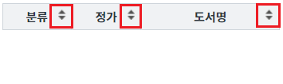
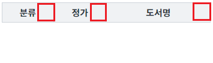
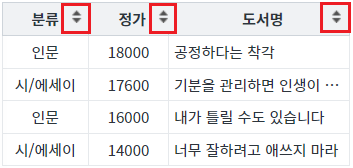
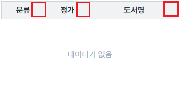
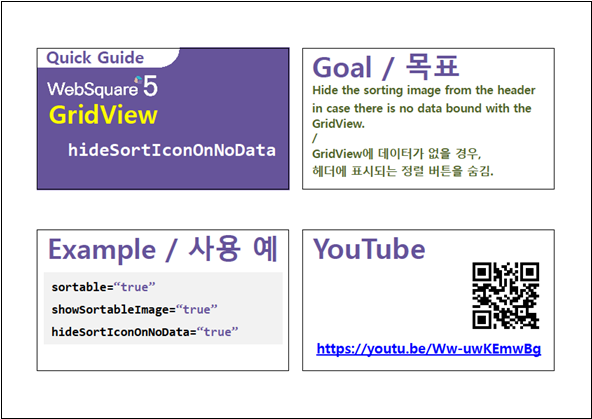

GridView의 속성 'hideSortIconOnNoData' 설정 값 비교 예제입니다. 이 속성은 GridView의 정렬(sort)기능을 사용하고 출력된 데이터가 없는 경우, 헤더의 정렬 이미지 표시에 대한 설정입니다.
설정 값에 따른 동작은 다음과 같습니다.
true : GridView에 출력된 데이터가 없으면 헤더에 정렬 아이콘이 표시되지 않습니다. (GridView와 연결된 DataList에 필터가 적용되어 출력된 데이터가 없는 경우에도 해당합니다.)
false : [default] GridView에 출력된 데이터의 유무와 상관 없이 헤더에 정렬 아이콘이 표시됩니다.
(기본 설정) 속성 'hideSortIconOnNoData' 미사용
속성 'hideSortIconOnNoData' 사용
속성 'hideSortIconOnNoData' 사용 시, 데이터 유무에 따른 표시 비교
STEP 1. 실행된 결과를 확인합니다.
예제 영역 [(기본 설정) 속성 'hideSortIconOnNoData' 미사용]에 구성된 GridView를 확인합니다.
GridView에 출력된 데이터는 없으며, 헤더 컬럼에 정렬 아이콘이 표시되어 있습니다.그림 1.브라우저(Chrome) 실행 예시

STEP 1. 실행된 결과를 확인합니다.
예제 영역 [속성 'hideSortIconOnNoData' 사용]에 구성된 GridView를 확인합니다.
GridView에 출력된 데이터는 없으며, 헤더 컬럼에 정렬 아이콘이 표시되지 않습니다.그림 2.브라우저(Chrome) 실행 예시

STEP 1. 초기 상태를 확인합니다.
예제 영역 [속성 'hideSortIconOnNoData' 사용 시, 데이터 유무에 따른 표시 비교]에 구성된 GridView를 확인합니다.
GridView에 출력된 데이터가 있으며, 헤더 컬럼에 정렬 아이콘이 표시되어 있습니다.그림 3.브라우저(Chrome) 실행 예시

STEP 2. GridView와 연결된 DataList의 데이터를 제거합니다.
버튼 데이터 제거하기를 클릭합니다.STEP 3. 실행된 결과를 확인합니다.
GridView에 출력된 데이터는 없으며, 헤더 컬럼에 정렬 아이콘이 표시되지 않습니다.
그림 4.브라우저(Chrome) 실행 예시

STEP 4. GridView와 연결된 DataList의 데이터를 할당합니다.
버튼 데이터 할당하기를 클릭합니다.STEP 5. 실행된 결과를 확인합니다.
GridView에 데이터가 출력되고, 헤더 컬럼에 정렬 아이콘이 표시됩니다.
그림 5.브라우저(Chrome) 실행 예시
STEP1. GridView의 속성을 정의합니다.
[필수] hideSortIconOnNoData="true"
(설정 값)
- true : GridView에 출력된 데이터가 없으면 헤더에 정렬 아이콘이 표시되지 않습니다.
- false : [default] GridView에 출력된 데이터의 유무와 상관 없이 헤더에 정렬 아이콘이 표시됩니다.
[필수] sortable="true"
정렬 기능 사용 설정입니다.
[필수] hideSortIconOnNoData="true"
정렬 아이콘 표시 설정입니다.
hideSortIconOnNoData
showSortableImage
sortable
GridView - hideSortIconOnNoData
링크 : https://www.youtube.com/embed/Ww-uwKEmwBg
